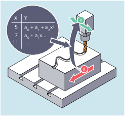

Mit Hilfe von Kurventabellen können Positions- und Geschwindigkeitsbeziehungen zwischen zwei Achsen (Leit- und Folgeachse) programmiert werden. Die Kurventabellendefinition erfolgt im Teileprogramm.
Kurventabellen ersetzen mechanische Kurvenscheiben. Die Kurventabelle bildet dabei die Grundlage für die axiale Leitwertkopplung, indem sie den funktionellen Zusammenhang zwischen Leit- und Folgewert schafft: Die Steuerung berechnet bei entsprechender Programmierung aus einander zugeordneten Positionen von Leit- und Folgeachse ein Polynom, das der Kurvenscheibe entspricht.
Siehe auch:
Kurventabellen definieren (CTABDEF, CATBEND)
Vorhandensein einer Kurventabelle prüfen (CTABEXISTS)
Kurventabellen löschen (CTABDEL)
Kurventabellen gegen Löschen und Überschreiben sperren (CTABLOCK, CTABUNLOCK)
Kurventabellen: Tabelleneigenschaften ermitteln (CTABID, CTABISLOCK, CTABMEMTYP, CTABPERIOD)
Kurventabellenwerte lesen (CTABTSV, CTABTEV, CTABTSP, CTABTEP, CTABSSV, CTABSEV, CTAB, CTABINV, CTABTMIN, CTABTMAX)
Kurventabellen: Ressourcennutzung prüfen (CTABNO, CTABNOMEM, CTABFNO, CTABSEGID, CTABSEG, CTABFSEG, CTABMSEG, CTABPOLID, CTABPOL, CTABFPOL, CTABMPOL)